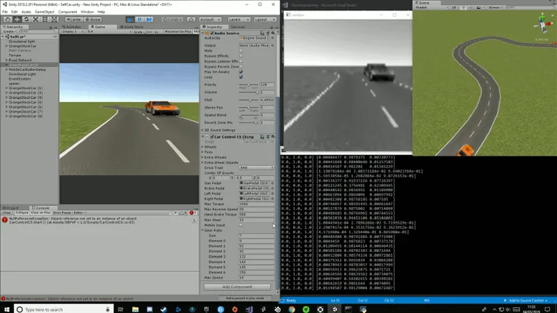
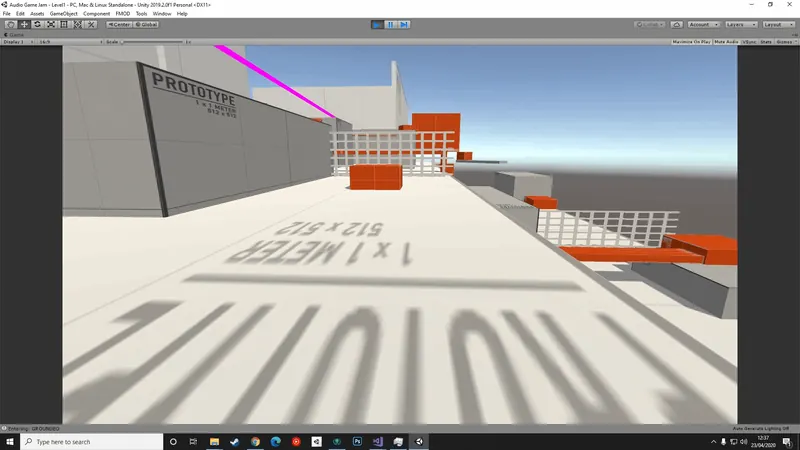
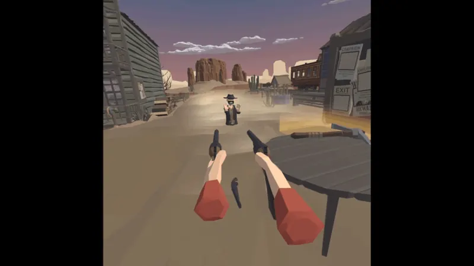
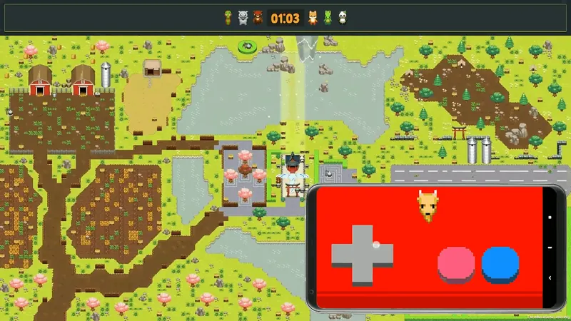
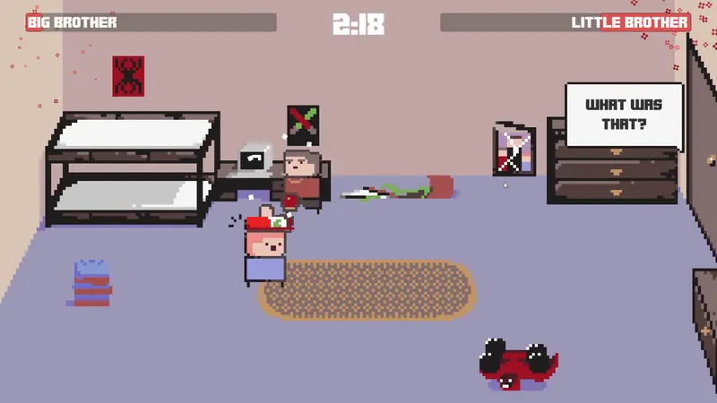
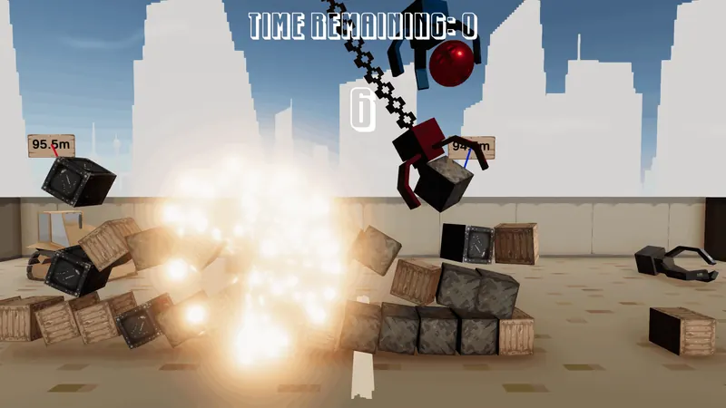
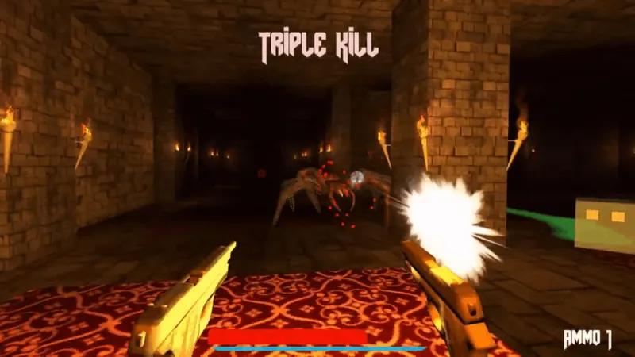

Lead Unity Developer
2022 – PresentBabcock International Group
Directing technical architecture, engineering standards and delivery of simulation platforms across UK submarine and naval programmes.
Senior Software Engineer
Simulation & Real-Time Systems
Lead Unity Developer at Babcock International, building simulation platforms and digital twins for UK submarine and naval programmes. Over 6 years shipping real-time systems in C# and C++, and founder of Soul Splicers.
Directing technical architecture, engineering standards and delivery of simulation platforms across UK submarine and naval programmes.
Built interactive 3D environments, digital twins and VR training systems for naval infrastructure and submarine crews.
Building a commercial 2D action roguelike solo in Unity/C#, from combat systems to backend, telemetry and CI/CD.
Studio, personal, university and game jam work. Defence work isn't shown here.

An infinite, editable voxel world in C++/DirectX 11: value-noise terrain, chunks loaded on separate threads, and quadtree-accelerated collision.

A physics, collision detection and response system written from scratch in C++/DirectX 11, with AABB, OBB, sphere and ray tests and a quadtree broad phase.

A convolutional neural network, trained in Python/TensorFlow on recorded human driving, that steers a car in Unity using only its front camera.

Builds a playable 3D environment in real time from the device's GPS position, using OpenStreetMap buildings and roads plus weather and local time. Runs on mobile and PC.

A component-based first person controller in Unity: each movement ability is a self-contained module that can be added or removed without touching the core controller.

A two-player networked co-op VR game for the Oculus Quest, built in Unity with Photon PUN. I built the networking, VR interactions and character controllers.

A 64-player local multiplayer game where any phone becomes a controller through a locally hosted web page, with no app to install. Built by a 34-person cohort.

A 2D couch-multiplayer beat 'em up made in 48 hours for Global Game Jam 2019. 1st place on site at The Foundry.

A physics-based 2.5D 1v1 claw game made in 48 hours for Global Game Jam 2020. 3rd place on site.

A side-scrolling shoot 'em up built in one week from a set of provided, recycled assets.

A first person parkour endless runner built in one week, with sliding, wall running and grappling.

A rogue-like dungeon crawler with a procedurally generated dungeon and a dragon boss that attacks with insults.
Open to senior simulation, real-time and engine roles across the UK.